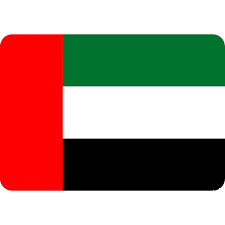

Oct 2024 – Present · Abu Dhabi
Deep cross-disciplinary insight into integrated avionics, real-time troubleshooting, and critical system recovery during AOG scenarios. Proven compliance with international aviation regulations (EASA, GCAA, FAA) and structured test criteria. Expertise in hardware/software debugging, communication protocols (GPIO, CAN-based logic), performance tuning, and simulator qualification cycles.
End-to-end delivery of UKSEDS competitions: National Rocketry Championship, Satellite Design Competition, Olympus Rover Trials, IOSM/ISAM, Mach24. Secured £50k+ sponsorship from Airbus, Skyrora, and industry partners.
Direct mentorship and technical review for teams building Mars rovers: navigation, autonomous object detection, manipulator control, and vibration/thermal qualification. Ensured alignment with real space mission requirements.
Record-breaking competitor turnout – grew engagement by 40% across all competitions in 2022/23 cycle.
Space Achievement – Student category, awarded at the Reinventing Space Conference, Liverpool. Recognised for “running UKSEDS’ national space competitions, supporting students’ skills development and industry exposure.” Amongst finalists from across the UK space sector. [reference:0][reference:1]
A research report on centre shift, compliance and stiffness of Cross-Spring and Butterfly flexure pivots. Performed nonlinear FEA in Abaqus, developed MATLAB code to analyse centre of rotation shift, eigenscrew decomposition for stiffness characterisation. Compared with literature for precision pointing applications for satellites.
Keywords: Compliant mechanisms, finite element analysis, centre shift, space mechanisms, eigenwrenches/eigentwists.
Designed tricycle landing gear for 120-passenger regional aircraft (Falco). Defined MLG/NLG geometry, tyre sizing (GoodYear catalogue), shock absorber simulation, tail strike & turnover angles. Integrated within wing box, load distribution (95% MLG), ICAO Code C compliance. Performed stress analysis and material trade-offs.
Led Mechanics, Actuators, and Controls sub-team for university fixed-wing UAV. Designed control surfaces, actuator selection, closed-loop control algorithms from concept to wind tunnel validation. Integrated full UAV assembly, sensor fusion, and real-time control in state-of-the-art wind tunnel facility.
Designed predictive wildfire model using satellite data: Random Forest achieved 0.705 F1-score. Applied SVM, ANN, logistic regression, decision trees. Feature extraction from remote sensing data, time-series analysis, and geospatial pattern recognition.

UAE Golden Visa holderNonlinear FEA | Control systems | Systems integration | Project leadership | Regulatory compliance (EASA/GCAA/FAA) | Hardware/software debugging | Technical writing | Public speaking
mohd.sherif2001@gmail.com
linkedin.com/in/mohamedfawzi1
+971 569071649
Open to aerospace systems integration, simulation engineering, and space programme leadership roles worldwide.